Mobile App
A map-first app for the city's small shows: buskers, pop-ups, and small-venue sets. Started as a concept, now a working app running on live curated Toronto listings, in beta at arnd.app.
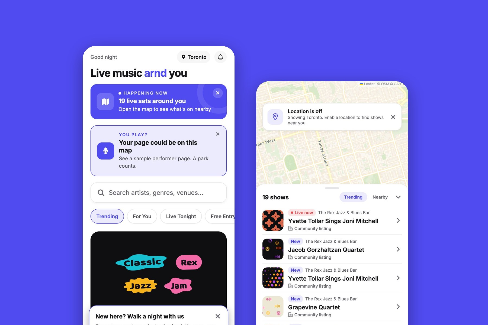
Live, local music is everywhere and almost impossible to find. Buskers, pop-ups, secret sets, small-venue gigs: they happen all around you and vanish without a trace. ARND ("around") answers one question the big platforms don't care about: what's playing near me, tonight?
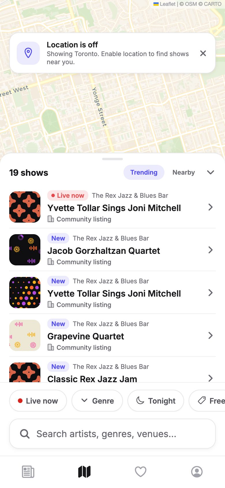
This started as a design exercise in reputation systems and two-sided marketplaces. Then it kept going. Today the feed, map, and search run on live curated Toronto listings served from Supabase, with row-level security on every table and hardened write paths. There is a front door at arnd.app, a governed design system with five themes measured to AA contrast, first-party crash reporting, and a written weekly routine for keeping the listings real. It is in beta, and it says so.
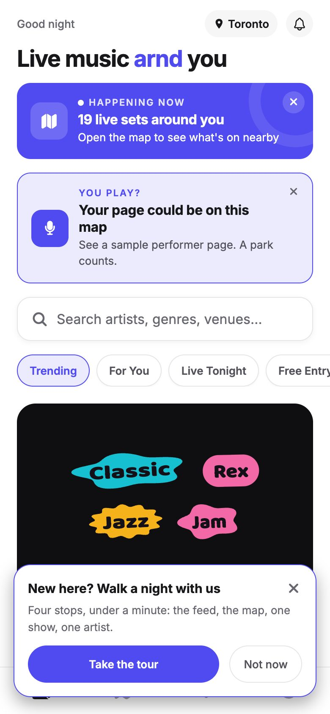
The obvious move was to scrape aggregators and launch with thousands of listings. I chose the opposite: a small number of real shows, picked by hand, every week. Community listings wear a badge saying what they are, and performers claim their page through a reviewed Instagram handshake that ends in an Official mark. In a product whose whole promise is "this is really happening," credibility is the feature. Everything else is furniture.
The same principle runs through the details. No fake success states anywhere: demo content is labeled, counts are measured or say "syncs soon," and features that live only on your device tell you so. Tips go person-to-person through the artist's own CashApp, Venmo, or PayPal. ARND takes nothing and has no rail that could pretend otherwise.
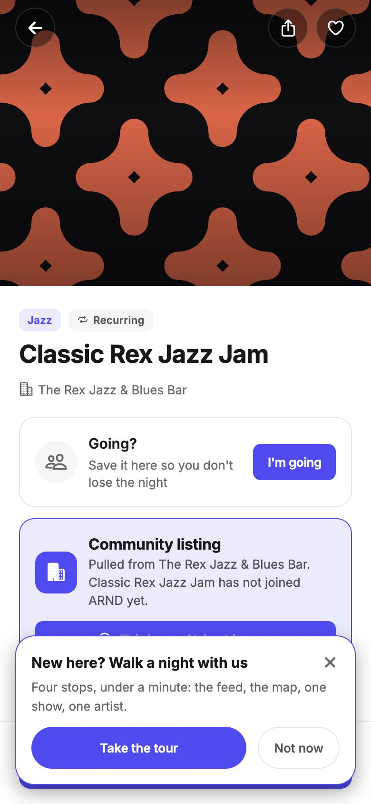
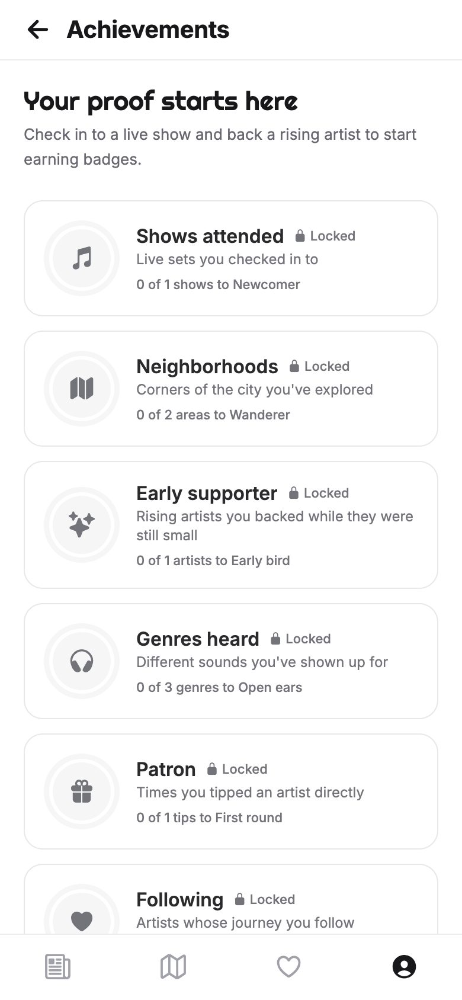
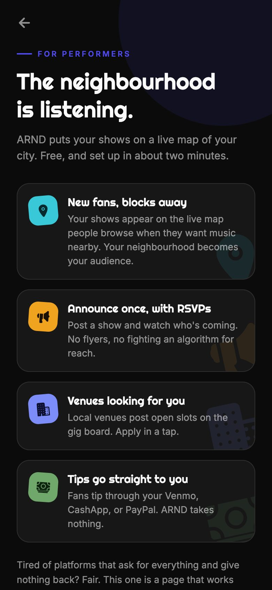
The newest surface skips the venue entirely. Anyone can throw a listening night from their profile: a shareable invite with RSVPs and plus-ones counted against the cap, the exact address unlocked only for people who said they're in, and a share poster that carries only the neighbourhood. Privacy decisions made where they belong, in the design.
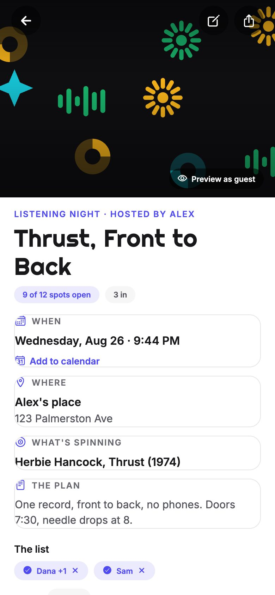
The brand doesn't stop at the app icon. arnd.app opens on a front door in the same voice: dark ground, the wordmark, and cards that route fans, musicians, and venue owners each to their own path. It leads with a thank-you to the Toronto listening rooms that inspired the whole thing, because credit is part of the brand too.
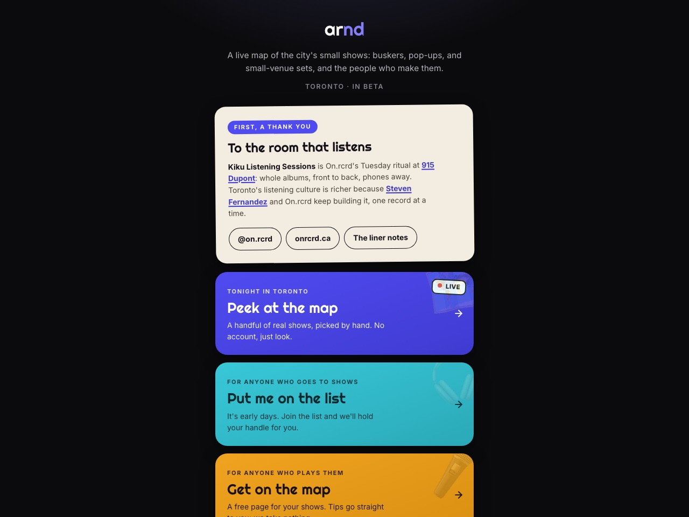
Real listings get real art. Each community show carries cover art in the app's sticker-block language, made per event: a park series finale, a Herbie Hancock listening night, a trip-hop session. Small shows deserve to look like they matter, because they do.
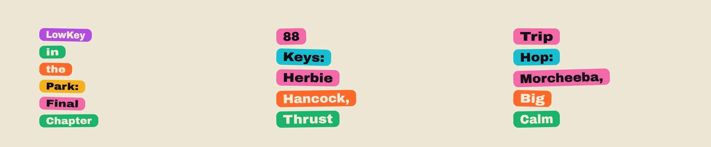
The part I care about most is the one you can check. ARND keeps a public changelog: over a hundred updates in plain language, each with what shipped and why, because a change without a why doesn't ship. Next to it live a governed design system page, where the code is the source of truth and disagreements get fixed the same day, and an atlas of every screen in the app. The content itself runs on a written weekly routine. None of this is required for an app this size. All of it is what makes one person's project pick-up-able by the next person.
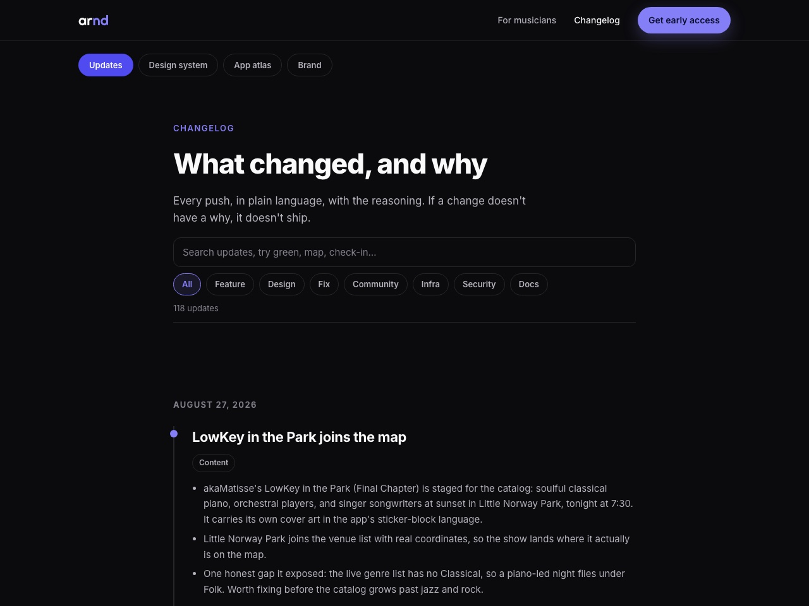
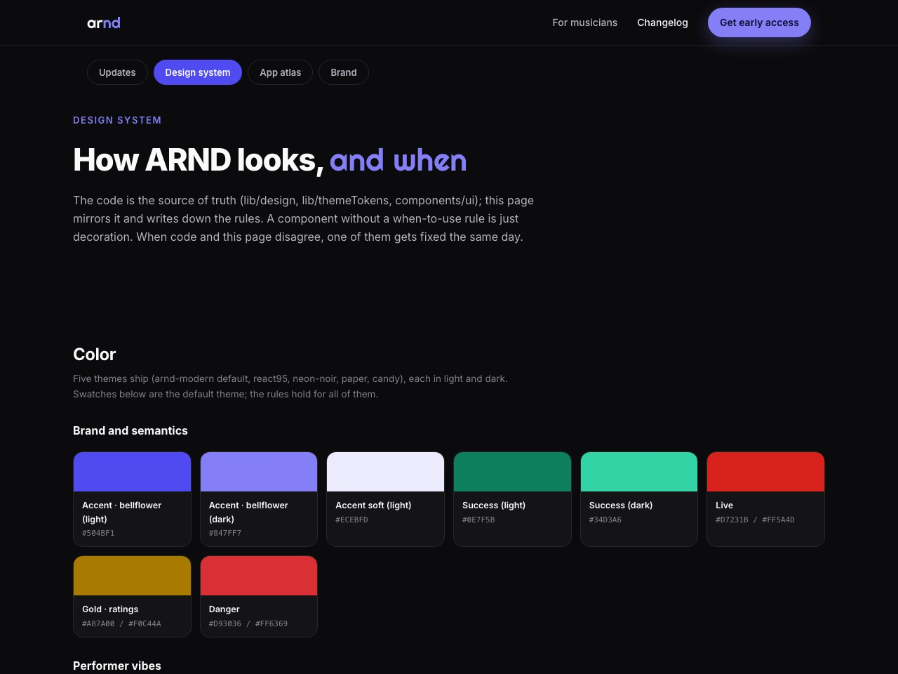
The deepest thing I've built end to end: brand, product, backend, security posture, payments stance, content operations, and the documentation that would let someone else pick it up. The iOS build is carried through App Store readiness the unglamorous way: Sign in with Apple, in-app account deletion, a privacy manifest, and accessibility work across VoiceOver and Dynamic Type. It's live in Toronto, in beta, growing one real show at a time.